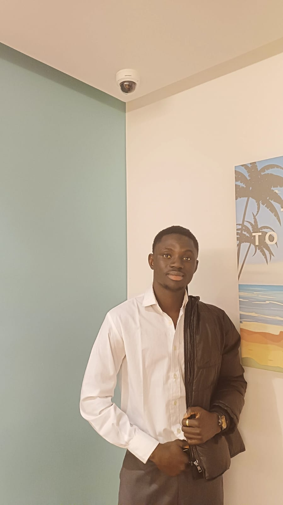
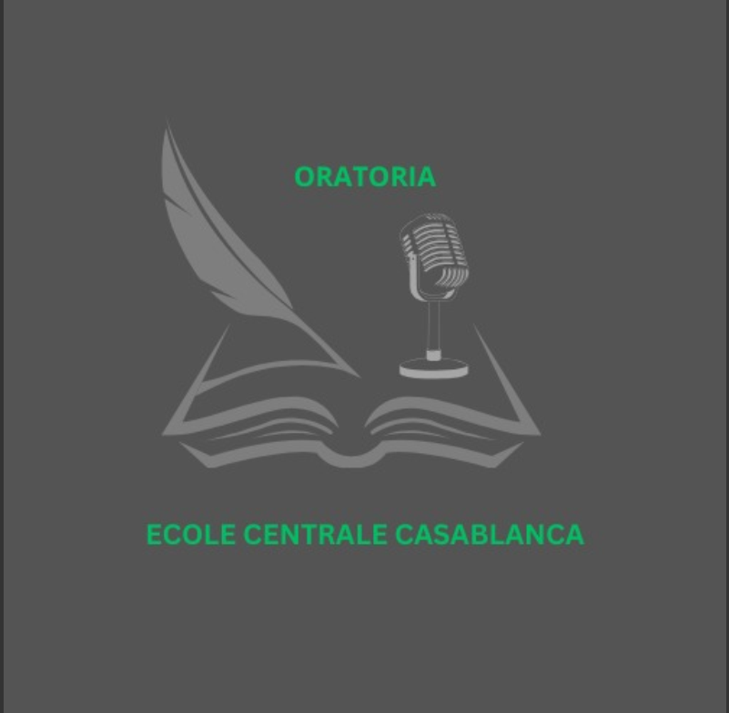
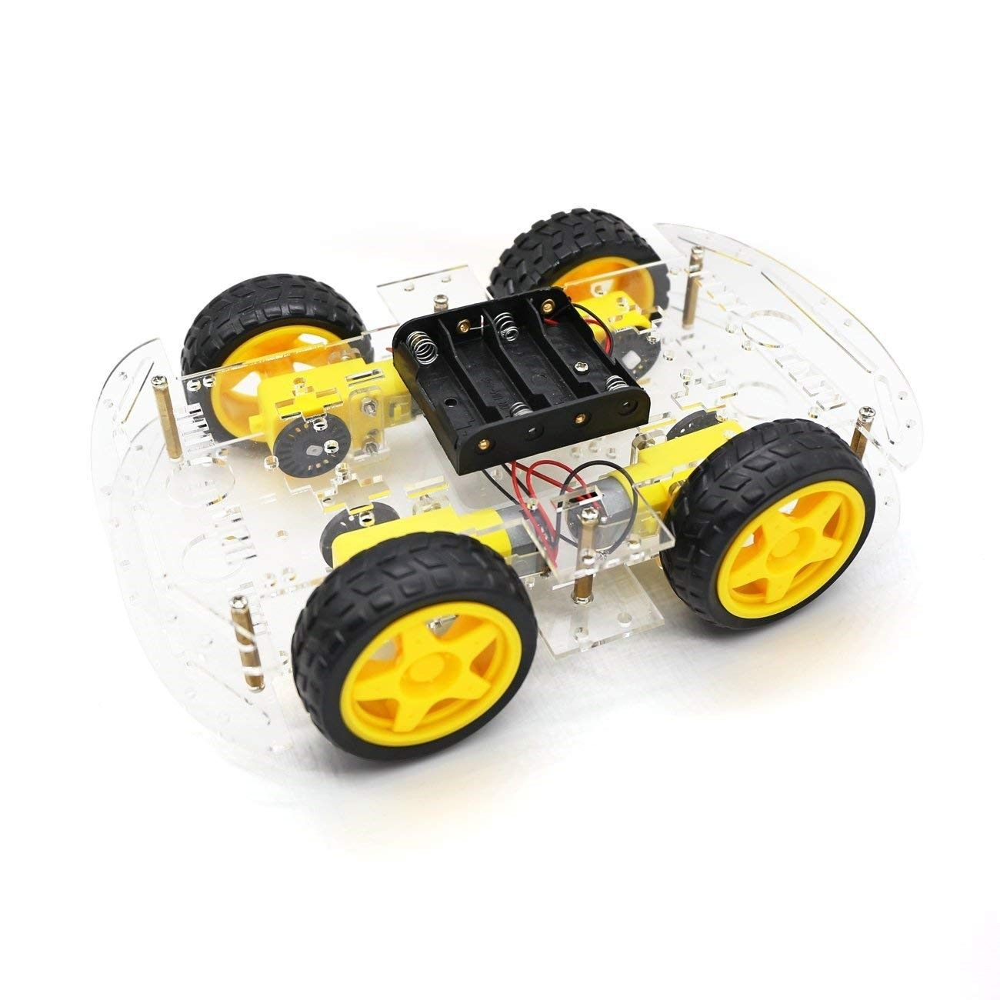
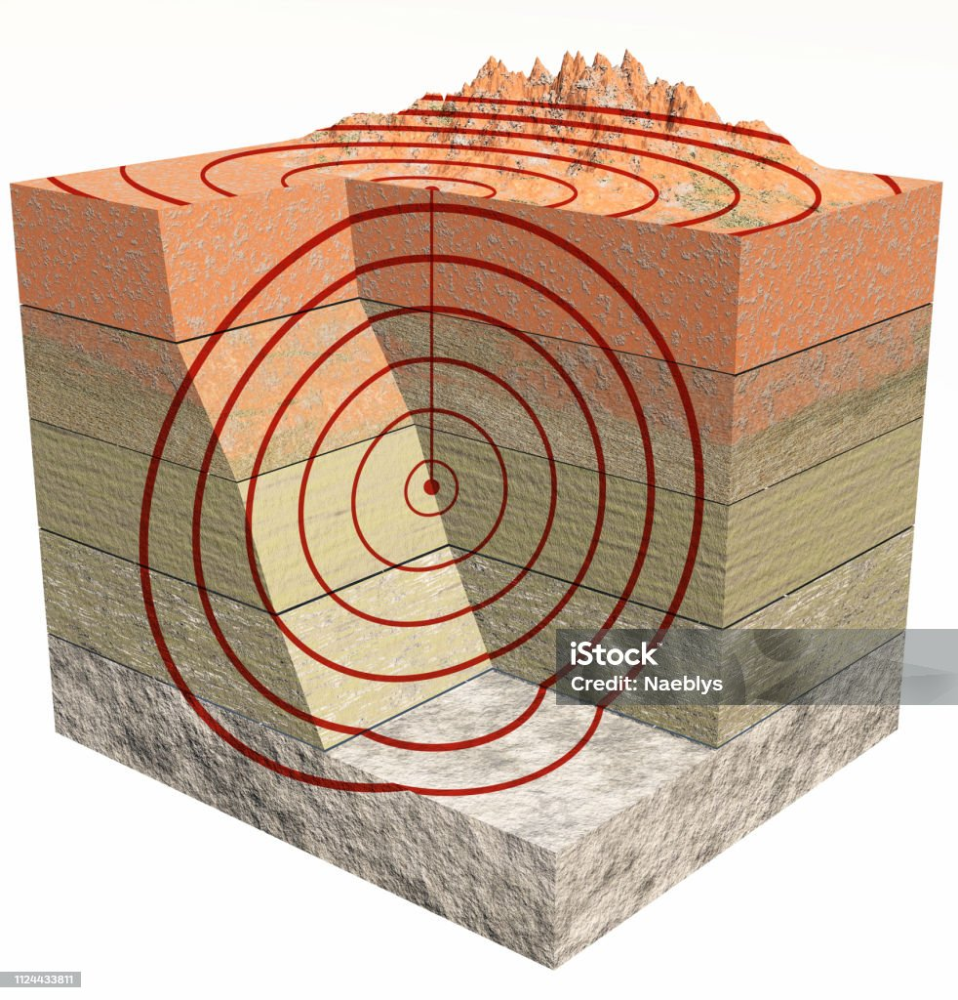

Bienvenue !
Je suis Sette TOURE, élève ingénieur passionné par la Data Science, l'IA et l'innovation technologique.
Explorez mon portfolio pour découvrir mon parcours, mes compétences et mes projets.
À propos de moi
Je suis Sette TOURE, étudiant ingénieur en première année à l’École Centrale de Casablanca (ECC), grande école d'ingénieurs généralistes au Maroc.
Mon parcours est animé par une curiosité scientifique constante et une soif d’apprentissage par la pratique.
Formé en Classes Préparatoires aux Grandes Écoles (CPGE) à Thiès (PCSI puis PC), j'ai acquis de solides bases en mathématiques, physique, chimie, sciences de l’ingénieur et informatique.
Diplômé en 2022 d'un baccalauréat scientifique (S2 – Sciences expérimentales) avec la mention Très Bien, je poursuis aujourd'hui ma passion pour la Data Science, l’Intelligence Artificielle et le développement web.
Compétences
- Python
- Java
- HTML5, CSS3
- Bureautique : Excel, Word, PowerPoint
Centres d'intérêt
- Football (joueur dans l'équipe de l'école)
- Basketball
- Lecture
- Cuisine
Langues parlées
- Français : Niveau C1
- Anglais : Niveau B2
- Wolof : Natif
Vie associative
- Membre actif du Club CentraleTech – Pôle Data & IA
-  Membre actif du Club ORATORIA – Art oratoire
Mes projets
Robot suiveur de ligne
Conception d’un robot mobile autonome capable de suivre un tracé prédéfini, réalisé au Fablab de l’ECC.
Optimisation énergétique des data centers
Développement d’un modèle prédictif intelligent pour réduire la consommation énergétique des data centers.
Application de prédiction du risque d’insuffisance cardiaque
Application Streamlit pour évaluer les risques médicaux par des modèles Machine Learning.
Projet FOREX – Mesure expérimentale des ondes sismiques
Étude expérimentale des ondes mécaniques dans différents matériaux à l’aide de capteurs piézoélectriques et Arduino, analyse avec Audacity.
Contact
Email professionnel : sette.toure@centrale-casablanca.ma
Email personnel : touresette77@gmail.com
LinkedIn : Mon LinkedIn
GitHub : Mon GitHub
Téléphone : (+212) 0783346309